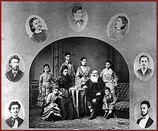

|  | ||
| Lipót (Leopold) Lőw was the chief rabbi in Szeged from 1850. During the Hungarian Revolution and War of Independence, he was an army rabbi, and after the revolution’s collapse he was imprisoned. As an enthusiastic supporter of emancipation and assimilation, he was the first to preach in Hungarian in the synagogue. He was also the first to study the history of the Jews of Hungary, and he was the editor of Ben Chananja, a scholarly periodical. | ||